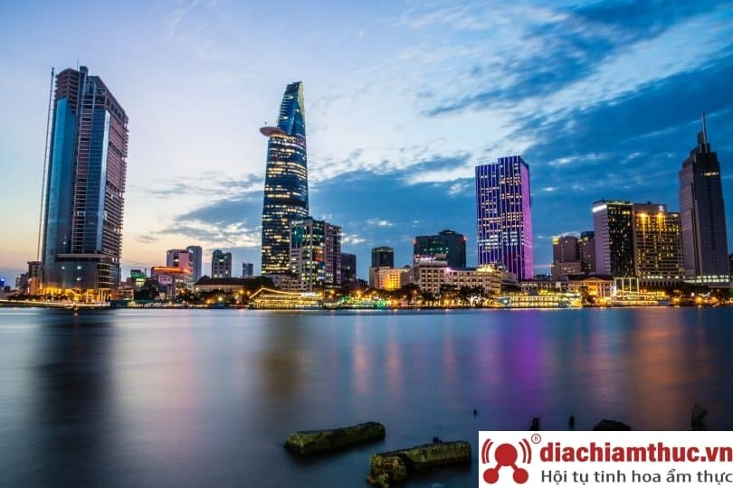
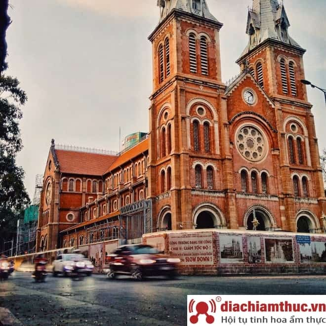
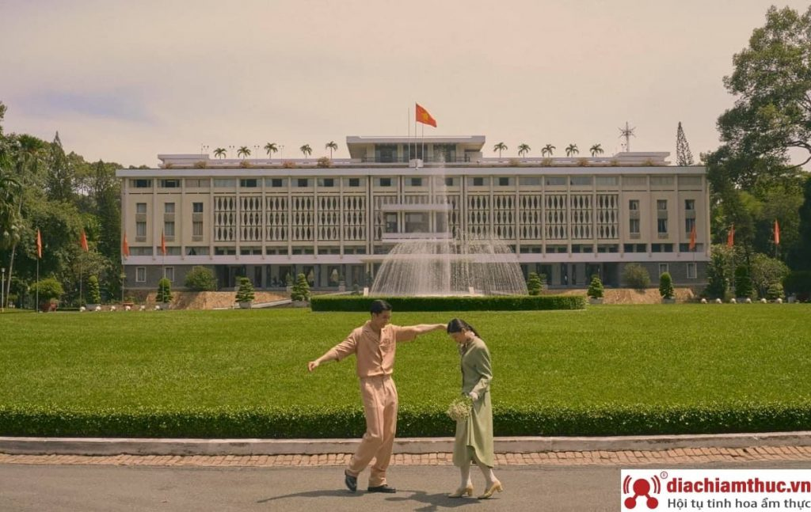
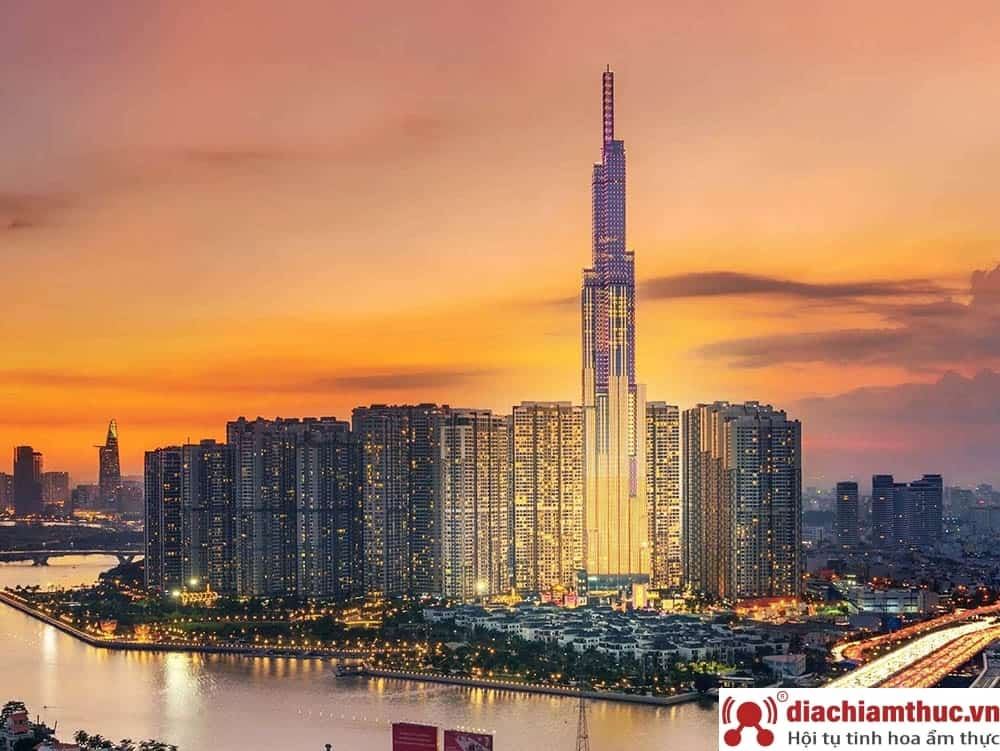
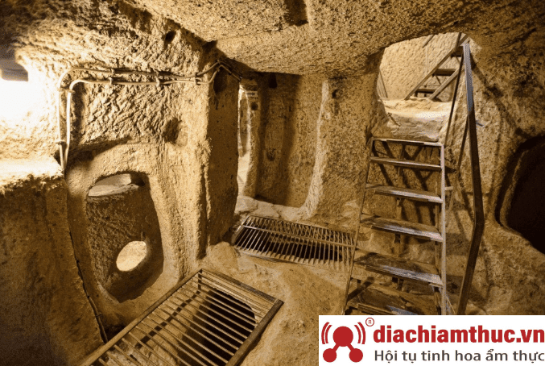

Nếu có dịp đến Sài Gòn nếu bạn không ghé qua những địa điểm du lịch, tham quan, vui chơi giải trí lý tưởng thì thật là một thiếu sót lớn đó.
Khi nhắc đến du lịch Sài Gòn, điểm đầu tiên mà không ít người nghĩ đến đó chính là Nhà thờ Đức Bà. Đây là một trong những địa điểm du lịch nổi tiếng mà bất kỳ du khách nào khi đến Sài Gòn cũng phải ghé thăm. Nhà thờ Đức Bà là một trong bốn vương cung thánh đường tại Việt Nam, còn có tên gọi khác là Nhà thờ chính tòa Đức Bà Sài Gòn hay Vương cung thánh đường chính tòa Đức Mẹ Vô nhiễm Nguyên tội.
Đây là một công trình kiến trúc độc đáo tại Sài Gòn, có thiết kế vô cùng đặc biệt. Nhà thờ Đức Bà được chính thức khởi công xây dựng vào năm 1863, với sức chứa lên tới 1200 người. Bên trong thánh đường được thiết kế thành 1 lòng chính, 2 lòng phụ tiếp đến là 2 dãy nhà nguyện. Với lối kiến trúc độc đáo Nhà thờ Đức Bà chắc chắn sẽ là điểm đến mà du khách không thể bỏ qua khi du lịch tại Sài Gòn.
Nhà thờ là sự kết hợp hài hòa giữa phong cách Roman và Gothic tuyệt đẹp, tạo nên sự khác lạ và gây ấn tượng trong lòng du khách. Nhà thờ Đức Bà chính là một biểu tượng du lịch đáng tự hào của người dân thành phố Hồ Chí Minh. Ngoài ra đây cũng là một điểm check in sống ảo được rất nhiều bạn trẻ yêu thích.
Dinh Độc Lập cũng là một địa điểm tham quan du lịch nổi tiếng tại thành phố Hồ Chí Minh. Nơi đây gắn liền với những chiến tích lịch sử, văn hóa hào hùng của dân tộc, trường tồn qua cuộc kháng chiến chống Mỹ cứu nước. Dinh độc lập được xếp vào danh sách di tích lịch sử đặc biệt cấp quốc gia. Dinh được kiến trúc sư Ngô Viết thụ Thiết kế xây dựng trên diện tích 4500m2, với hơn 100 căn phòng được trang trí khác nhau.
Dinh Độc Lập mang hơi hướng phương Đông. Khi đến đây bạn có thể tận mắt chiêm ngưỡng từng vật phẩm ở chế độ cũ được lưu lại tại Dinh theo thời gian, cùng với đó là những chiêm nghiệm về lịch sử đấu tranh của dân tộc. Vào dịp 30/4 – 1/5 hàng năm, Dinh Độc Lập thu hút rất đông khách du lịch đến tham quan. Khi đến với Sài Gòn thì dinh độc lập chính là một địa điểm mà bạn không thể bỏ qua.
Landmark 81 – tòa nhà chọc trời cao nhất Việt Nam là địa điểm du lịch không nên bỏ qua. Đến với Landmark 81, du khách có thể thoải mái sử dụng đa dạng các dịch vụ tiện ích. Hứa hẹn sẽ thỏa mãn được nhu cầu nghỉ dưỡng và vui chơi giải trí. Đặc biệt trong tòa nhà này còn có một trung tâm thương mại lớn của Vincom. Hứa hẹn giúp cho bạn thoải mái mua sắm những món đồ thương hiệu hàng đầu trên thế giới.
Ngoài ra, các dịch vụ vui chơi giải trí nơi đây hứa hẹn sẽ cho bạn những trải nghiệm thư giãn tuyệt vời. Một số tiện ích thú vị tại Landmark 81 như: Rạp chiếu phim CGV, Sân băng Vincom Ice Rink,… Cùng hơn 30 nhà hàng lớn nhỏ với các món ăn hấp dẫn từ 5 châu lục. Với hệ thống phòng nghỉ sang trọng, tiện nghi, đây sẽ là địa điểm nghỉ dưỡng tuyệt vời cho những chuyến công tác tại Sài Gòn. Đặc biệt, khi đến đây bạn còn được ngắm nhìn vẻ đẹp toàn cảnh của thành phố mang tên Bác.
Địa đạo Củ Chi là một trong những di tích nổi tiếng cấp quốc gia tại Sài Gòn. Nơi đây được mệnh danh là “mê cung dưới lòng đất”. Được rất nhiều khách du lịch trải nghiệm và khám phá. Địa đạo Củ Chi hứa hẹn sẽ mang đến cho bạn những cảm xúc khó quên trong chuyến hành trình du lịch tại thành phố mang tên Bác.
Không chỉ có giá trị lịch sử, văn hóa, Địa đạo Củ Chi còn là hệ thống phòng thủ, căn cứ quân sự của người dân Việt Nam trước đây. Địa đạo này có sức hút mạnh mẽ đối du khách vì còn lưu giữ được rất nhiều những chiến tích lịch sử. Những hiện vật và công trình gắn liền với thời kỳ đấu tranh hào hùng của dân tộc. Khi đến đây du khách có thể tận mắt chiêm ngưỡng nơi làm việc của cán bộ từ kho chứa, nhà bếp đến phòng làm việc. Tất cả đều được đặt ở dưới lòng đất. Đây quả là là một trải nghiệm vô cùng thú vị.
Sài Gòn có quá nhiều điểm đến thú vị mà bạn không thể bỏ qua. Vì vậy, trước khi đến với thành phố náo nhiệt và năng động này, bạn nên chuẩn bị cho mình một lịch trình thật kỹ càng nhé! Và hy vọng với những gợi ý về địa điểm du lịch Sài Gòn trên đây sẽ đem đến cho bạn những trải nghiệm thật tuyệt vời.